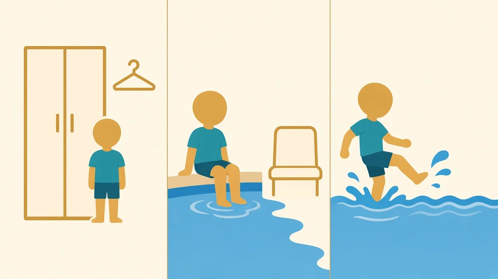

什麼是特殊學習困難（概念）？
特殊學習困難泛指整體智力可以在一般範圍，但在讀寫、數學或動作協調等特定能力上有持續明顯困難。常見包括讀寫障礙（文字解碼、拼寫與閱讀處理）、數學／書寫相關困難，以及發展性動作協調障礙（DCD）（動作計劃、協調與學習新動作）。它們可以並存，也可與專注或發展需要同時出現——教學應看孩子實際表現，而不是只看標籤。請避免用「論盡」「懶惰」等字眼描述孩子。
溫馨提示：本頁為家長教育整理，供認識特殊需要與游泳教學方向參考，並非醫療診斷或治療建議。孩子個別安排請 WhatsApp 與教練商討。


讀寫障礙：對游泳課的影響
讀寫障礙不是智力低、懶惰或欠缺動機。口語理解與創意可能很強，但長文字規則、技術名稱或書面評估會較吃力。水中動作本身未必受影響，但接收文字資訊、一次記住多個技術要求會較困難。
- 先示範，再用短文字／短口語提示；多用圖、箭嘴、流程圖。
- 「一指令一動作」：完成一步再加下一步；同一動作用固定用語。
- 多感官：看示範、聽短提示、親身做；練完可請孩子用自己的話說出重點。
- 不要把閱讀慢解讀成「不投入」；理論或書面表現未必等於實際游泳能力。
- 糾正盡量私下進行，不公開比較學員表現。
動作協調障礙（DCD）：水中怎樣教？
DCD 影響動作協調與學習，孩子可能顯得笨拙、節奏不穩，或難同時控制四肢與呼吸。這不代表不能學游泳——浮力環境反而適合用重複與分步建立動作模式。
- 動作拆解：例如先流線 → 踢水 → 單臂划 → 再加呼吸；一次只加一個新元素。
- 重複穩定：練習流程固定，給足次數，不要因「慢」就過早加難。
- 外在提示：浮板、水道線幫助孩子感受身體位置；需觸覺引導時先徵得同意。
- 環境調整：減少干擾，先求動作質素再求速度／距離；注意池邊步行、上落水與器材搬運的協調安全。
- 由易成功的動作開始，給足重複次數，保護自信；不要因「慢」就一次示範整套泳式。
家長常見問題
讀寫障礙會否學不會游泳？
一般不會。重點是少依賴長文字，多示範與分步。游泳甚至可以成為孩子建立自信的強項。
DCD 孩子游自由泳／蛙泳特別難？
初學時四肢與呼吸協調確實較吃力。我們會拆細步驟、放慢要求，並留意池邊安全；進步往往靠重複與成功經驗堆疊。